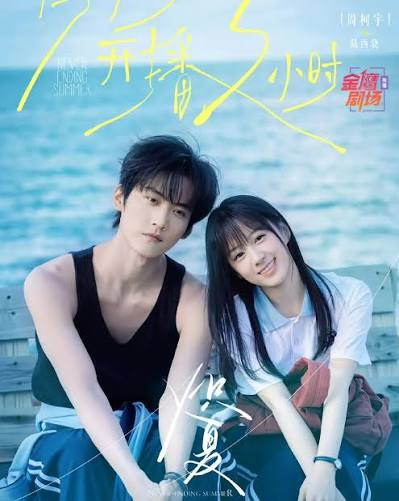
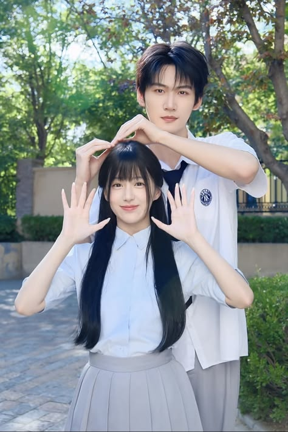

Головні герої: Відмінниця Чжоу Вань та Лу Сісяо (пасинок її матері). Початок історії: Аби зібрати гроші на термінову операцію для своєї тяжкохворої бабусі, Чжоу Вань звертається по допомогу до Лу Сісяо. Вимушене знайомство поступово переростає в щирі почуття, і літо після випускного стає для них часом першого кохання, юності та мрій. Конфлікт і розлука: Через реальні життєві обставини, тиск та непорозуміння пара розлучається. Через 10 років: Герої знову зустрічаються дорослими під час спільного розслідування аварії на заводі. Попри образи та минуле, почуття між ними не згасають, і вони проходять через випробування, щоб розібратися в правді та бути разом.

